32 specimens · 21 new
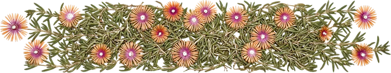
ice plant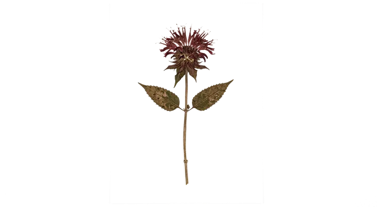
bee balm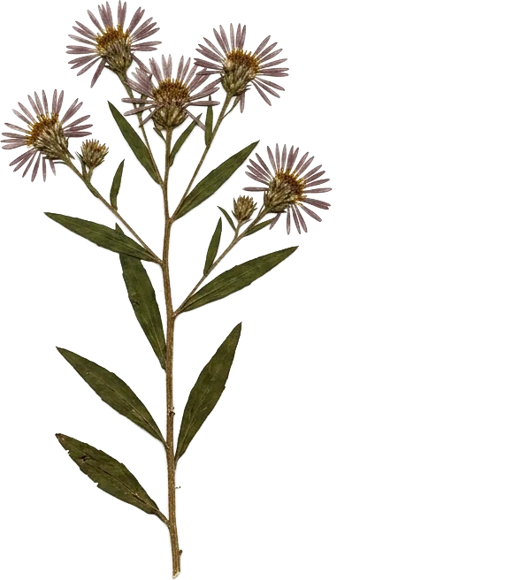
aster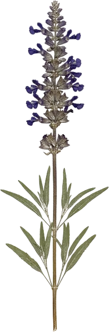
blue salvia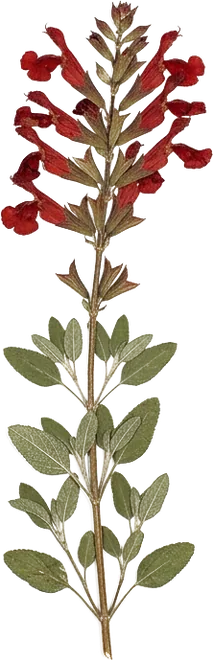
furmans red sage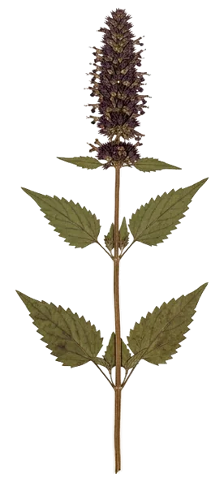
hyssop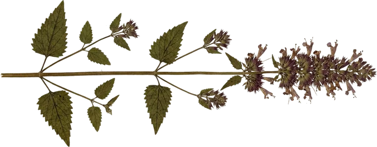
hummingbird mint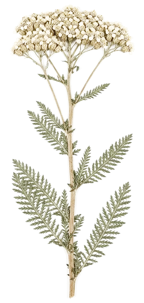
yarrow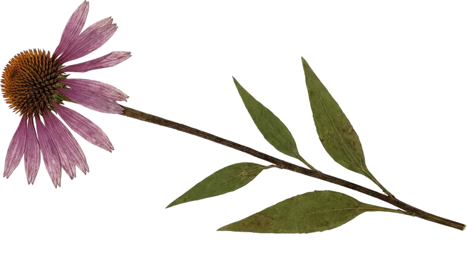
echinacea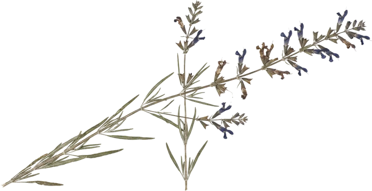
pitcher salvia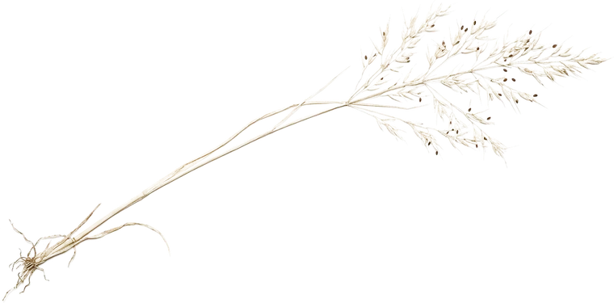
grass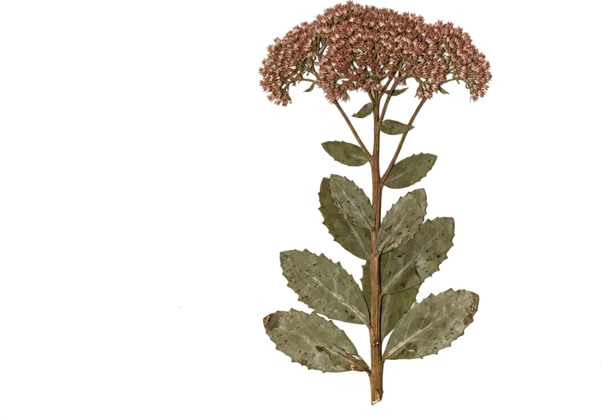
autumn joy sedum new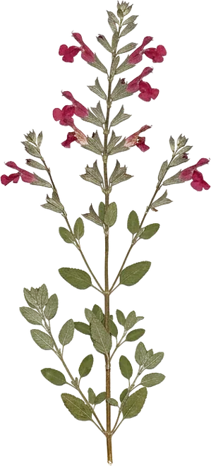
red salvia new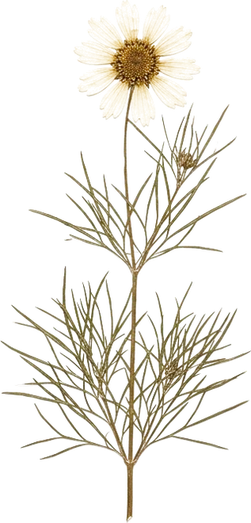
moonbeam coreopsis new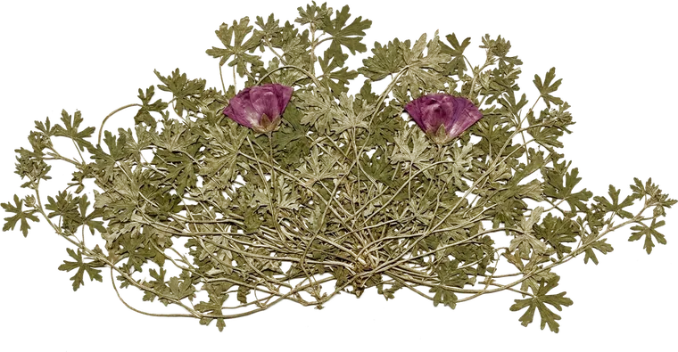
prairie winecups new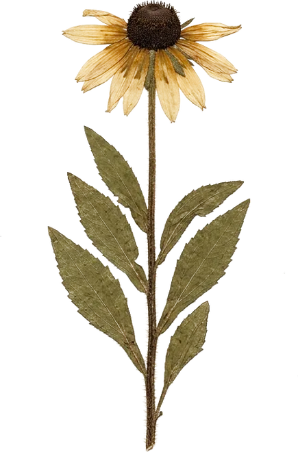
black eyed susan new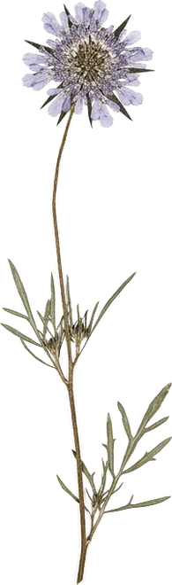
butterfly blue pincushion new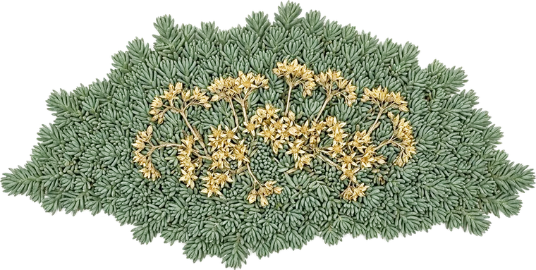
blue spruce sedum new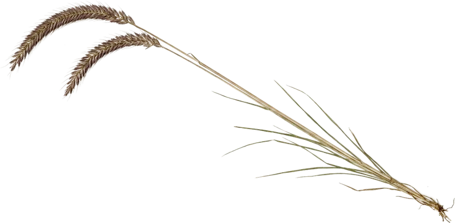
blue grama grass new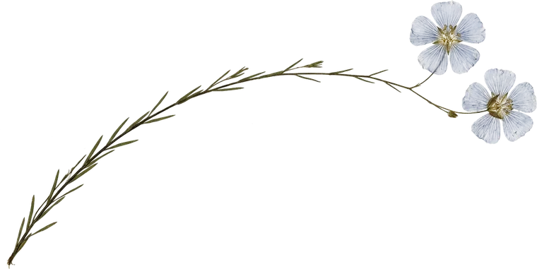
blue flax new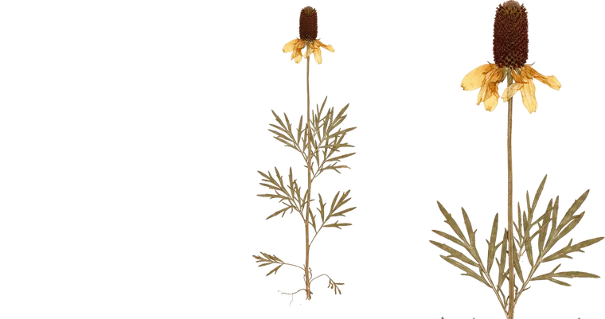
prairie coneflower new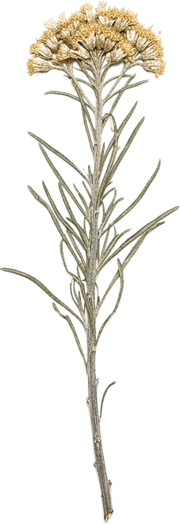
rabbitbrush new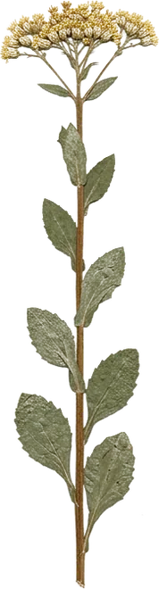
rigid goldenrod new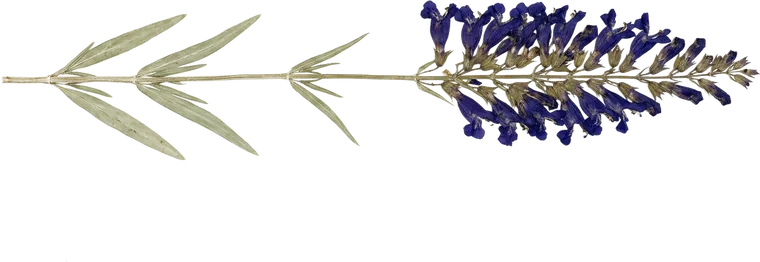
rocky mountain penstemon new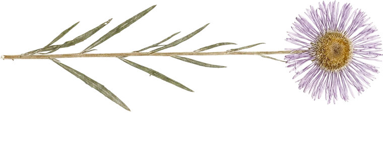
showy fleabane new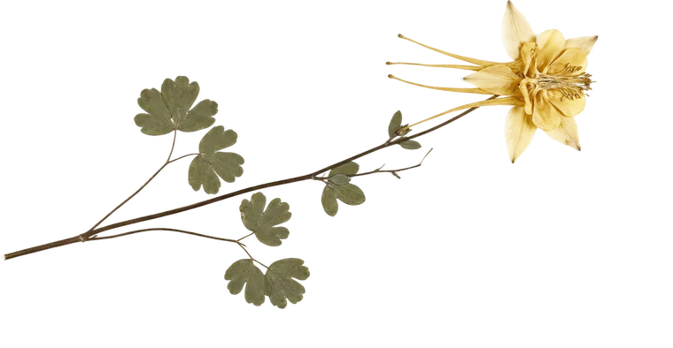
yellow columbine new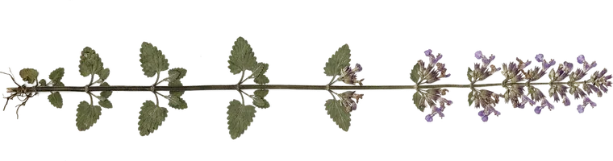
walkers low catmint new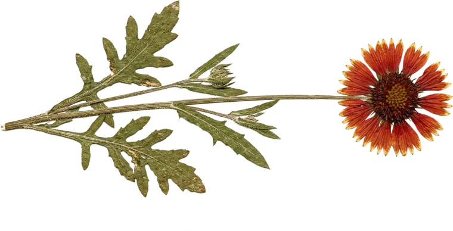
blanket flower new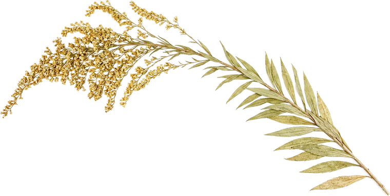
golden baby goldenrod new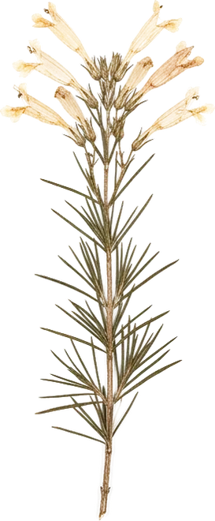
pineleaf penstemon new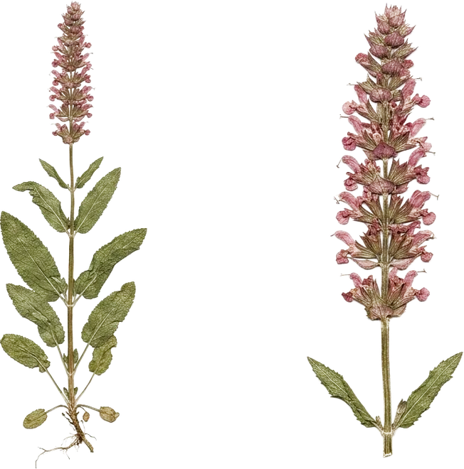
rose marvel salvia new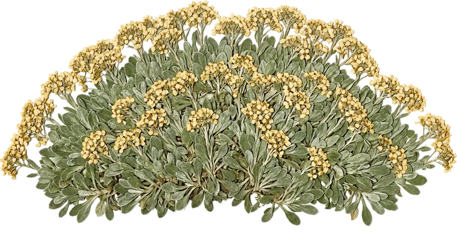
basket of gold new